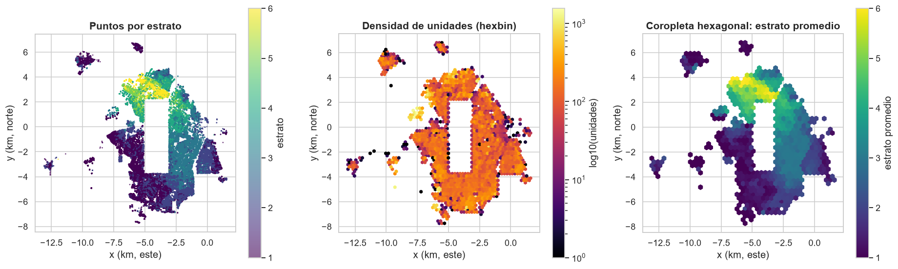
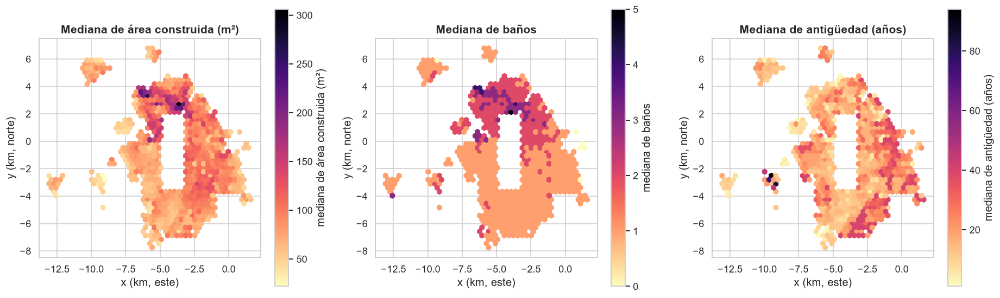
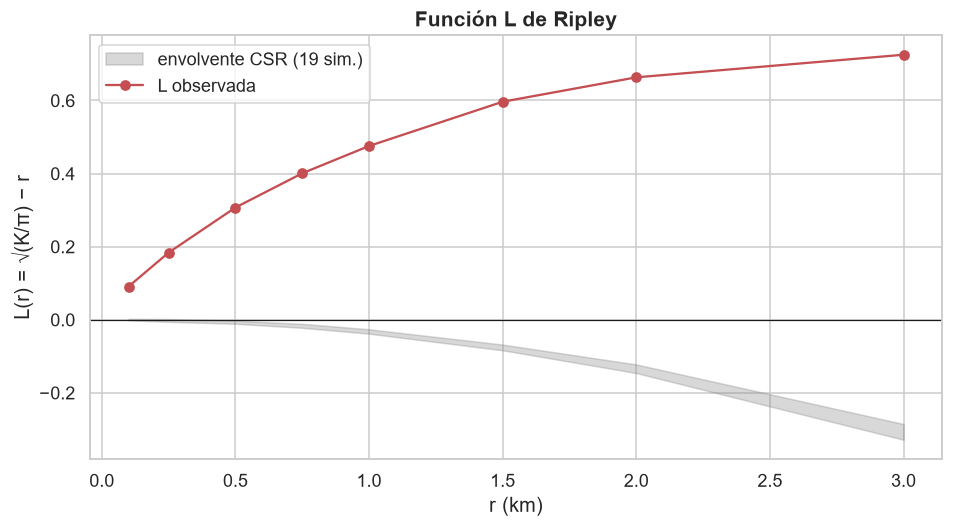
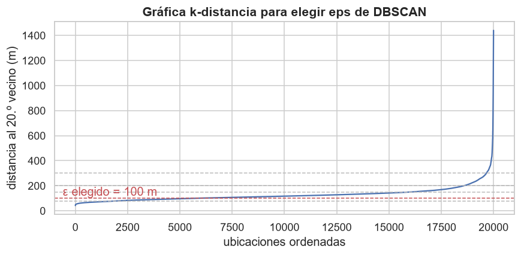
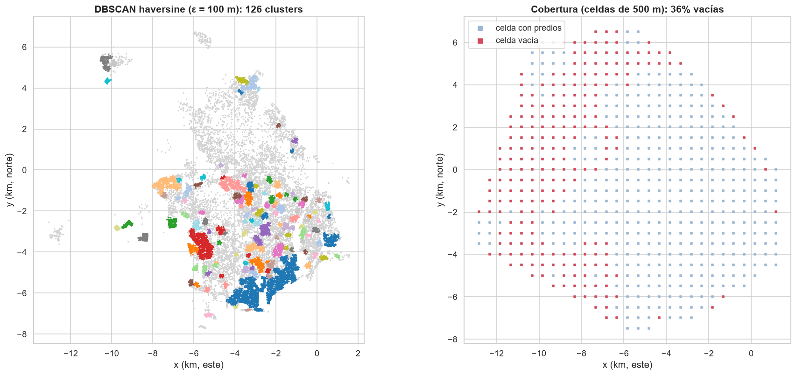
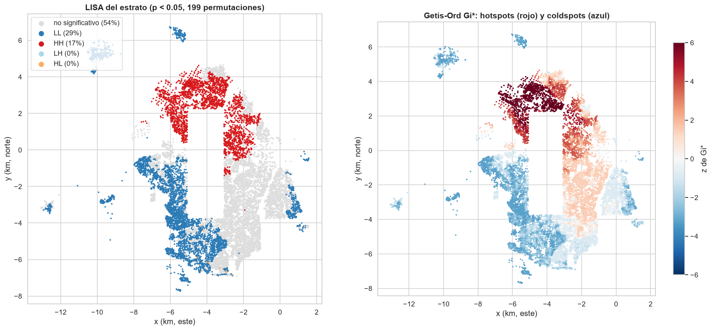
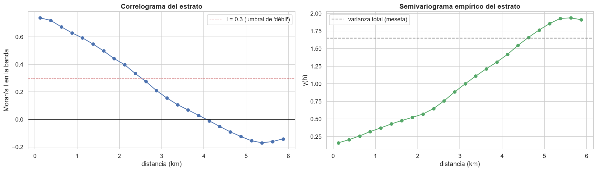
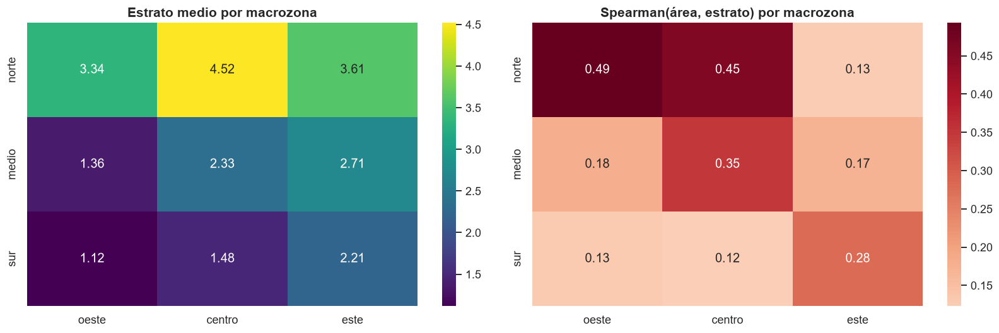

8. Componente espacial (sección 2.7)#
Autores: María Carolina Cantillo Orozco (200179105) y Juan Camilo Oñoro Araujo (200177329)
Qué hace este capítulo
Pregunta que responde: ¿cómo se distribuye el estrato en el espacio, y qué obliga eso a hacer en la validación y en el modelo?
Datos: las 257 273 viviendas de entrenamiento, salvo en la sección 8.3, que usa solo las ubicaciones de todo el universo de modelado (se explica allí por qué).
Conceptos nuevos: índice de Clark-Evans, función de Ripley, índice de Moran (global y local, LISA), Getis-Ord Gi*, correlograma, heterogeneidad espacial y MAUP.
Sale de aquí: el tamaño del buffer (1 km) que separa entrenamiento y prueba, y las variables espaciales del modelo.
Obligatorio porque el dataset tiene latitud/longitud. El recorrido va de lo
más simple a lo más elaborado: primero se verifica que las coordenadas
estén bien (8.1) y se mira el mapa (8.2); luego se describe dónde hay
viviendas (8.3) y cuánto se parecen los vecinos en estrato (8.4); después
se revisa si la relación entre variables y estrato cambia por zonas (8.5) y
si los resultados dependen de la escala (8.6). Se cierra con las variables
espaciales del modelo (8.7) y las consecuencias para el modelado (8.8). Implementación propia con numpy/scipy/scikit-learn en
src/espacial.py (sin geopandas/pysal, para no depender de librerías
geoespaciales pesadas cuya instalación varía según la versión de Python);
las fórmulas son las estándar (Moran 1950; Anselin 1995; Getis & Ord 1992;
Clark & Evans 1954; Ripley 1976).
Train: 257,273 filas
8.1 Validación de coordenadas#
CRS: WGS84 geográfico (EPSG:4326);
01_descarga_predios.pypide la geometría conoutSR=4326y calcula el centroide del polígono del terreno.Rangos válidos, latitud/longitud invertidas, (0, 0), puntos fuera del área de estudio, precisión y duplicados espaciales:
La validación se hace sobre las coordenadas crudas del CSV (antes de cualquier filtro), porque después de la limpieza ya no quedan coordenadas inválidas por construcción. Es una revisión de formato, no usa el estrato.
# Validación de formato de las coordenadas sobre el CSV CRUDO: tras la limpieza
# ya no quedarían errores que detectar. Se cuentan nulos, rangos imposibles,
# ejes invertidos, (0, 0), puntos fuera del área de estudio y duplicados.
crudo = L.cargar_crudo()
# errors="coerce": cualquier texto no numérico pasa a NaN y se cuenta como faltante.
lat_c = pd.to_numeric(crudo["centroide_lat"], errors="coerce")
lon_c = pd.to_numeric(crudo["centroide_lon"], errors="coerce")
presentes = lat_c.notna() & lon_c.notna()
lat_p, lon_p = lat_c[presentes], lon_c[presentes]
# Número de decimales de la latitud: aproxima la precisión posicional registrada.
decimales = lat_p.astype(str).str.split(".").str[1].str.len()
# Unidades por coordenada en train: mide cuántos apartamentos comparten el centroide
# de su edificio (duplicados espaciales esperables, no errores).
coords_unicas = train.groupby(["centroide_lat", "centroide_lon"]).size()
val = pd.Series({
"filas del CSV crudo": len(crudo),
"sin coordenadas (nulas)": int((~presentes).sum()),
# Rangos válidos del sistema WGS84 (EPSG:4326).
"latitud fuera de [-90, 90]": int((~lat_p.between(-90, 90)).sum()),
"longitud fuera de [-180, 180]": int((~lon_p.between(-180, 180)).sum()),
# Barranquilla está en lat ≈ 11 y lon ≈ -74.8: una "latitud" entre -80 y -66
# delataría que lat y lon se guardaron intercambiadas.
"posibles lat/lon invertidas (lat con valor de longitud)": int(lat_p.between(-80, -66).sum()),
# (0, 0) es el valor por defecto típico de geocodificaciones fallidas.
"coordenadas (0, 0)": int(((lat_p == 0) & (lon_p == 0)).sum()),
# Caja envolvente del área de estudio definida en config.py.
"fuera de la caja de Barranquilla": int((~(lat_p.between(C.LAT_MIN, C.LAT_MAX)
& lon_p.between(C.LON_MIN, C.LON_MAX))).sum()),
"mediana de decimales en latitud": float(decimales.median()),
"coordenadas únicas en train": len(coords_unicas),
"unidades de train por coordenada (media)": float(coords_unicas.mean()),
"unidades de train por coordenada (máx.)": int(coords_unicas.max()),
}, name="valor").to_frame()
del crudo # se libera memoria: el CSV crudo no se vuelve a usar en el capítulo
val
| valor | |
|---|---|
| filas del CSV crudo | 382,597.0000 |
| sin coordenadas (nulas) | 57,651.0000 |
| latitud fuera de [-90, 90] | 0.0000 |
| longitud fuera de [-180, 180] | 0.0000 |
| posibles lat/lon invertidas (lat con valor de longitud) | 0.0000 |
| coordenadas (0, 0) | 0.0000 |
| fuera de la caja de Barranquilla | 5.0000 |
| mediana de decimales en latitud | 15.0000 |
| coordenadas únicas en train | 110,492.0000 |
| unidades de train por coordenada (media) | 2.3284 |
| unidades de train por coordenada (máx.) | 1,266.0000 |
Las coordenadas se guardan con muchos decimales (la mediana de 15 es un artefacto de coma flotante); con 5–6 decimales ya se tiene precisión submétrica (~0.1–1 m), más que suficiente. De las 382 597 filas del CSV crudo, 57 651 no tienen coordenadas; entre las que sí las tienen, solo 5 puntos caen fuera de la caja de Barranquilla, ninguno en (0, 0), ninguno invertido y ninguno fuera de los rangos de WGS84. Los duplicados espaciales (muchas unidades en una misma coordenada) son esperables: todos los apartamentos de un edificio heredan el centroide de su matriz, y todas las viviendas informales ubicadas por su manzana (sección 1.7.2) comparten el centroide de la manzana. En train hay 110 492 coordenadas únicas, con 2.3 unidades por coordenada en promedio y hasta 1 266 en una sola. Por eso los cálculos de autocorrelación se hacen a nivel de edificio (una fila por edificio, y un punto por manzana para las viviendas ubicadas por su manzana) para no inflar Moran’s I.
Distancias: proyección local vs. haversine#
Las instrucciones del proyecto piden no usar distancia euclidiana sobre grados. Se trabaja con una
proyección equirectangular local en km (x_km, y_km); se verifica su
error frente a la distancia haversine:
# Se valida la proyección equirectangular local (x_km, y_km, cap. 1) contra la
# distancia haversine (gran círculo sobre la esfera, la "verdad" geodésica). Si el
# error es despreciable, se puede usar distancia euclidiana en km en todo el capítulo.
lat, lon = train["centroide_lat"], train["centroide_lon"]
rng = np.random.default_rng(C.SEED) # semilla fija: el resultado es reproducible
# 20 000 pares aleatorios de puntos: cubren distancias cortas y largas de la ciudad.
i, j = rng.integers(0, len(train), 20_000), rng.integers(0, len(train), 20_000)
d_h = S.haversine_km(lat.to_numpy()[i], lon.to_numpy()[i], lat.to_numpy()[j], lon.to_numpy()[j])
# Distancia euclidiana en el plano proyectado (km).
d_p = np.hypot(train["x_km"].to_numpy()[i] - train["x_km"].to_numpy()[j],
train["y_km"].to_numpy()[i] - train["y_km"].to_numpy()[j])
# Se descartan pares a menos de 50 m (o el mismo edificio, distancia 0): el error
# relativo dividiría por un número casi nulo y se dispararía sin significado.
ok = d_h > 0.05
err = np.abs(d_p[ok] - d_h[ok]) / d_h[ok] * 100
print(f"Error relativo proyección vs. haversine: mediana {np.median(err):.4f}%, máximo {err.max():.4f}%")
Error relativo proyección vs. haversine: mediana 0.0015%, máximo 0.0204%
8.2 Visualización#
Mapa de puntos sobre mapa base#
Mapa interactivo (OpenStreetMap) con una muestra de 2 500 unidades de train coloreadas por estrato. Por la consideración ética del capítulo 1 no se muestran identificadores ni etiquetas por punto.
# Mapa interactivo sobre OpenStreetMap: permite al lector reconocer barrios reales
# y juzgar si el patrón por estrato es verosímil. Se usa una muestra pequeña para
# que el HTML del libro no pese decenas de MB; folium es opcional.
try:
import folium
# Muestra ESTRATIFICADA por estrato: conserva las proporciones de clase de train,
# de modo que el mapa no sobre- ni subrepresente ningún estrato.
m = S.muestra_estratificada(train, 2500)
# Se centra el mapa en el promedio de las coordenadas (lat/lon en grados, EPSG:4326).
mapa = folium.Map(location=[m["centroide_lat"].mean(), m["centroide_lon"].mean()], zoom_start=12,
tiles="OpenStreetMap")
# Convierte la paleta viridis (RGB en [0, 1]) a hexadecimal para HTML; es la misma
# paleta ordinal que en el resto del libro (claro = bajo, oscuro = alto).
colores = {k: "#{:02x}{:02x}{:02x}".format(*[int(255 * c) for c in G.PALETA_ESTRATO[k]]) for k in C.CLASES}
for _, r in m.iterrows():
# Solo un círculo coloreado, sin popup ni etiqueta: no se exponen
# identificadores de predios (consideración ética del cap. 1).
folium.CircleMarker([r["centroide_lat"], r["centroide_lon"]], radius=2, color=colores[r[C.OBJETIVO]],
fill=True, fill_opacity=0.8, weight=0).add_to(mapa)
# Leyenda HTML manual (folium no genera leyendas para marcadores).
leyenda = "".join(f"<div><span style='background:{colores[k]};width:12px;height:12px;display:inline-block'>"
f"</span> {C.NOMBRES_CLASES[k]}</div>" for k in C.CLASES)
mapa.get_root().html.add_child(folium.Element(
f"<div style='position:fixed;bottom:20px;left:20px;z-index:9999;background:white;padding:6px;"
f"font-size:13px'>{leyenda}</div>"))
display(mapa)
# Si folium no está instalado, el capítulo sigue: los mapas estáticos cubren lo esencial.
except ImportError:
print("folium no está instalado: pip install folium (solo afecta a este mapa interactivo).")

No hay polígonos de barrio o comuna en el servicio de catastro abierto, así que la «coropleta» se hace sobre celdas hexagonales regulares. Mapas de las variables más relevantes (mediana por celda):

8.3 Patrón de puntos y cobertura#
Se analiza la ubicación de los edificios/lotes (coordenadas únicas) de toda la población de modelado (train + test). Excepción deliberada a la regla «solo train»: aquí solo se usan ubicaciones (no el estrato ni ninguna otra variable), y si se usara solo train los bloques de prueba aparecerían como huecos artificiales que sesgarían el índice de Clark-Evans, la función de Ripley y el mapa de cobertura. Nada de esta sección alimenta decisiones del modelo.
Índice del vecino más cercano (Clark-Evans): compara la distancia promedio de cada punto a su vecino más cercano con la que se esperaría si los puntos estuvieran repartidos completamente al azar con la misma densidad. Ejemplo: si en promedio el vecino más cercano está a 10 m, pero al azar estaría a 20 m, R = 10 ÷ 20 = 0.5: los puntos están más juntos de lo que el azar produciría. R < 1 agrupado, R ≈ 1 aleatorio, R > 1 regular (como los árboles de una plantación).
# Índice de Clark-Evans: compara la distancia media al vecino más cercano observada
# con la esperada bajo aleatoriedad espacial completa (CSR) de igual densidad.
# Excepción deliberada: se usan ubicaciones de train + test (solo coordenadas, sin
# estrato) para que los bloques de test no aparezcan como huecos artificiales.
ubicaciones = P.cargar_particion()[["x_km", "y_km", "centroide_lat", "centroide_lon"]]
# Coordenadas ÚNICAS: los apartamentos de un edificio comparten centroide y darían
# distancias al vecino de 0 m, lo que simularía un agrupamiento extremo espurio.
xy_unicos = ubicaciones[["x_km", "y_km"]].drop_duplicates().to_numpy()
# Área de referencia = envolvente convexa, sin corrección de borde (limitación leve).
ce = S.clark_evans(xy_unicos)
pd.Series(ce, name="Clark-Evans").to_frame()
| Clark-Evans | |
|---|---|
| n_puntos_unicos | 135,481.0000 |
| area_km2 | 149.9038 |
| d_obs_km | 0.0093 |
| d_esp_km | 0.0166 |
| R | 0.5584 |
| z | -310.9679 |
Función L de Ripley (muestra de 3 000 edificios, envolvente de 19 simulaciones de aleatoriedad espacial completa dentro de la envolvente convexa):
# Función L de Ripley: a diferencia de Clark-Evans (que solo mira el vecino más
# cercano), evalúa el agrupamiento a VARIAS escalas r. L(r) > 0 y por encima de la
# envolvente de simulaciones CSR indica agrupamiento significativo a esa escala.
# Radios de 100 m (manzana) a 3 km (sector de ciudad).
radios = np.array([0.1, 0.25, 0.5, 0.75, 1.0, 1.5, 2.0, 3.0])
# n_sim=19: con 19 simulaciones, la envolvente mín-máx equivale a una prueba de
# Monte Carlo con α ≈ 2/(19+1) = 0.10 bilateral (0.05 por lado).
# n_max=3000: K(r) cuenta pares (costo ~n²), por eso se submuestrea.
rip = S.ripley_L(xy_unicos, radios, n_sim=19, n_max=3000, seed=C.SEED)
fig, ax = plt.subplots(figsize=(10, 5))
# Banda gris: rango de L bajo aleatoriedad espacial completa dentro de la envolvente.
ax.fill_between(rip["r_km"], rip["L_csr_min"], rip["L_csr_max"], color="grey", alpha=0.3,
label="envolvente CSR (19 sim.)")
# Curva roja: L observada; si queda por encima de la banda, hay agrupamiento.
ax.plot(rip["r_km"], rip["L_obs"], "o-", color="#c44e52", label="L observada")
ax.axhline(0, color="k", lw=0.8) # L = 0: valor esperado teórico bajo CSR
ax.set_xlabel("r (km)")
ax.set_ylabel("L(r) = √(K/π) − r")
ax.set_title("Función L de Ripley")
ax.legend()
G.guardar(fig, "08_ripley")
plt.show()
rip

| r_km | L_obs | L_csr_min | L_csr_max | |
|---|---|---|---|---|
| 0 | 0.1000 | 0.0907 | -0.0018 | 0.0022 |
| 1 | 0.2500 | 0.1836 | -0.0059 | 0.0018 |
| 2 | 0.5000 | 0.3070 | -0.0112 | -0.0028 |
| 3 | 0.7500 | 0.4007 | -0.0222 | -0.0114 |
| 4 | 1.0000 | 0.4754 | -0.0383 | -0.0263 |
| 5 | 1.5000 | 0.5965 | -0.0838 | -0.0682 |
| 6 | 2.0000 | 0.6633 | -0.1461 | -0.1225 |
| 7 | 3.0000 | 0.7252 | -0.3287 | -0.2856 |
Clusters espaciales (DBSCAN con distancia haversine) sobre una muestra de 20 000 ubicaciones únicas (mínimo 20 vecinos): identifica zonas densas continuas y puntos aislados. Con un ε grande (300 m) casi todos los puntos quedan en un único cluster gigante (la ciudad es un tejido urbano continuo a esa escala), así que un ε fijo de antemano no informa. Por eso se prueba una pequeña rejilla de ε y se elige el mayor ε cuyo cluster principal agrupe menos de la mitad de los puntos (si ninguno lo cumple, el menor ε). DBSCAN aquí es solo descriptivo: no alimenta al modelo.
# DBSCAN descriptivo: identifica zonas densas continuas y puntos aislados sin fijar
# de antemano el número de clusters. Como ε (radio de vecindad) es arbitrario, se
# explora una rejilla de ε y se elige con una regla explícita y reproducible.
# Una fila por coordenada (edificio/lote): si no, un edificio de 200 apartamentos
# cumpliría por sí solo min_samples y crearía "núcleos densos" artificiales.
ed = ubicaciones.drop_duplicates(["centroide_lat", "centroide_lon"])
# Submuestra de 20 000 ubicaciones: DBSCAN con haversine sobre >100 000 puntos es lento.
ed = ed.sample(min(20_000, len(ed)), random_state=C.SEED)
# gráfica k-distancia (k = min_samples): el "codo" orienta la elección de eps
from sklearn.neighbors import NearestNeighbors
# Distancia de cada ubicación a su 20.º vecino (en el plano proyectado, km).
kd, _ = NearestNeighbors(n_neighbors=20).fit(ed[["x_km", "y_km"]]).kneighbors(ed[["x_km", "y_km"]])
fig, ax = plt.subplots(figsize=(9, 3.8))
# Distancias ordenadas en metros: donde la curva se dispara (codo) empiezan los
# puntos aislados; un ε por debajo del codo deja fuera a esos puntos como ruido.
ax.plot(np.sort(kd[:, -1]) * 1000)
ax.set_xlabel("ubicaciones ordenadas")
ax.set_ylabel("distancia al 20.º vecino (m)")
ax.set_title("Gráfica k-distancia para elegir eps de DBSCAN")
# Análisis de sensibilidad: 75, 100, 150, 200 y 300 m.
sens, resultados_db = [], {}
for eps in [0.075, 0.1, 0.15, 0.2, 0.3]:
# Métrica haversine sobre lat/lon en radianes (distancia real sobre la esfera,
# no euclidiana sobre grados); min_samples=20 exige ~20 lotes en el radio ε.
et = S.dbscan_haversine(ed["centroide_lat"].to_numpy(), ed["centroide_lon"].to_numpy(),
eps_km=eps, min_samples=20)
# Tamaño de cada cluster (etiqueta -1 = ruido, se excluye), de mayor a menor.
tam = pd.Series(et[et >= 0]).value_counts()
resultados_db[eps] = et
sens.append({"eps_m": int(eps * 1000), "n_clusters": len(tam),
"% en el cluster mayor": 100 * (tam.iloc[0] if len(tam) else 0) / len(et),
"% ruido": 100 * (et == -1).mean()})
sens = pd.DataFrame(sens).set_index("eps_m")
# Regla de elección: el MAYOR ε cuyo cluster principal agrupe < 50 % de los puntos.
# Un ε mayor fusiona toda la ciudad en un bloque (no informa); uno menor dispara el
# ruido. Si ningún ε cumple la regla, se toma el menor de la rejilla.
validos = sens.index[sens["% en el cluster mayor"] < 50]
eps_m = int(validos.max()) if len(validos) else int(sens.index.min())
# Líneas horizontales sobre la gráfica k-distancia: ε probados (gris) y elegido (rojo).
for e_ in sens.index:
ax.axhline(e_, color="#c44e52" if e_ == eps_m else "#bbbbbb", ls="--", lw=1)
ax.text(0.01, eps_m, f" ε elegido = {eps_m} m", color="#c44e52", va="bottom",
transform=ax.get_yaxis_transform())
plt.show()
display(sens.round(1))
etiquetas = resultados_db[eps_m / 1000]
# Número de clusters sin contar la etiqueta de ruido (-1).
n_cl = len(set(etiquetas)) - (1 if -1 in etiquetas else 0)
print(f"ε elegido: {eps_m} m | clusters DBSCAN: {n_cl} | puntos aislados (ruido): "
f"{100 * (etiquetas == -1).mean():.1f}%")
tam_cl = pd.Series(etiquetas[etiquetas >= 0]).value_counts()
print("Tamaño de los 5 clusters mayores:", tam_cl.head().to_dict())

| n_clusters | % en el cluster mayor | % ruido | |
|---|---|---|---|
| eps_m | |||
| 75 | 63 | 1.4000 | 82.1000 |
| 100 | 126 | 13.5000 | 46.0000 |
| 150 | 35 | 63.4000 | 7.8000 |
| 200 | 17 | 83.1000 | 3.1000 |
| 300 | 8 | 93.7000 | 0.5000 |
ε elegido: 100 m | clusters DBSCAN: 126 | puntos aislados (ruido): 46.0%
Tamaño de los 5 clusters mayores: {0: 2698, 6: 690, 3: 476, 7: 362, 20: 279}

Interpretación
Agrupamiento fuerte. Con 135 481 ubicaciones únicas en ~150 km², la distancia media al vecino más cercano es 9.3 m frente a 16.6 m esperados bajo aleatoriedad: R de Clark-Evans = 0.56 (z = −311). La función L de Ripley está muy por encima de la envolvente de aleatoriedad en todas las escalas, de 100 m a 3 km. Los predios están agrupados, como es de esperar en una ciudad: manzanas densas separadas por vías, parques y cuerpos de agua.
DBSCAN. Con ε = 300 m, el 94 % de los puntos cae en un único cluster y solo 0.5 % es ruido: a esa escala Barranquilla es un tejido urbano continuo, y los otros 7 clusters suman apenas el 6 % restante. Con 200 m el cluster mayor aún reúne el 83 %, y con 150 m el 63 %. Por eso la regla elige ε = 100 m (el mayor con el que ningún cluster concentra más de la mitad de los puntos): 126 clusters, el mayor con el 13.5 % de los puntos (2 698 de 20 000) y 46 % de ruido; con 75 m el ruido sube al 82 %. En la versión anterior del libro la regla elegía 150 m: los centroides de manzana de las viviendas informales (sección 1.7.2) rellenan huecos del sur y el suroccidente, y a 150 m ese tejido ya queda unido al centro-sur en un solo bloque. A 100 m, el cluster mayor es el sur denso, y le siguen clusters de pocos cientos de puntos repartidos por el sur y el centro; casi todo el norte queda como ruido: allí hay menos ubicaciones únicas por km², porque predominan torres PH (muchas unidades con un mismo centroide) y lotes más grandes.
Cobertura. El 36 % de las celdas de 500 m dentro de la envolvente convexa no tiene ningún predio ubicado, igual que sin la ubicación por manzana: las viviendas recuperadas caen en manzanas que ya tenían edificios ubicados. La mayoría de las celdas vacías están en la periferia occidental y norte, donde el mapa muestra solo enclaves aislados. Parte son zonas sin uso residencial (industria, humedales, vías, suelo rural), pero parte pueden ser asentamientos informales no ubicables (cap. 2: el 3.1 % de las filas limpias sigue sin coordenadas; cap. 3: el 98 % de ellas son predios informales y el 84 % estrato 1). Es un sesgo de muestreo espacial residual: el modelo no ve esas zonas.
8.4 Autocorrelación espacial#
El índice de Moran, con un ejemplo. El índice de Moran (I) mide si los valores de un lugar se parecen a los de sus vecinos. Para cada edificio se compara su estrato (por encima o por debajo de la media de la ciudad) con el estrato promedio de sus vecinos. Si los edificios de estrato alto suelen tener vecinos de estrato alto y los de estrato bajo, vecinos de estrato bajo, I es positivo y cercano a 1. Si los vecinos fueran como sacados al azar, I sería cercano a 0. Un I negativo indicaría un patrón de tablero de ajedrez (alto rodeado de bajo). La significancia se evalúa con permutaciones: se reparten los estratos al azar entre los edificios 999 veces y se ve si el I observado es mayor que todos los del azar.
Matriz de pesos. Para calcular Moran hay que definir quién es «vecino» de quién. Se usan los k = 8 vecinos más cercanos, fila-estandarizada. Justificación: la densidad de predios es muy desigual (centro denso, periferia dispersa); con una banda de distancia fija, en la periferia habría puntos sin vecinos y en el centro puntos con cientos. Con kNN todos tienen el mismo número de vecinos. La contigüidad (reina/torre) requeriría polígonos que no tenemos a nivel de edificio. Para no inflar el índice con unidades del mismo edificio (misma coordenada, mismo estrato), se trabaja con una fila por edificio sobre una muestra estratificada.
# Construcción de la base para autocorrelación: muestra estratificada de train,
# reducida a UNA fila por edificio, y matriz de pesos espaciales de k vecinos.
# Muestra estratificada de 25 000 unidades: conserva las proporciones de estrato y
# mantiene manejable el costo de las permutaciones (Moran, LISA).
muestra = S.muestra_estratificada(train, C.N_MUESTRA_ESPACIAL)
# Deduplicación por edificio (prefijo NPN de 22 dígitos o, si falta, coordenada):
# las unidades de un edificio comparten centroide y casi siempre estrato; dejarlas
# como vecinos entre sí inflaría Moran's I con "autocorrelación" trivial. Las
# variables numéricas quedan promediadas por edificio.
edif = S.deduplicar_por_edificio(muestra)
print(f"Muestra: {len(muestra):,} unidades -> {len(edif):,} edificios únicos "
f"({100 * (1 - len(edif) / len(muestra)):.1f}% eran unidades del mismo edificio)")
xy = edif[["x_km", "y_km"]].to_numpy() # coordenadas proyectadas: distancias en km
# W: k = 8 vecinos más cercanos, fila-estandarizada (cada vecino pesa 1/8). kNN en
# vez de banda de distancia porque la densidad es muy desigual: garantiza el mismo
# número de vecinos a todos. k = 8 es un valor habitual (análogo a la contigüidad
# reina de una grilla) que da un rezago estable sin alejarse demasiado del punto.
# dist_vec e idx_vec (distancias e índices de los vecinos) se reutilizan en LISA y Gi*.
W, dist_vec, idx_vec = S.pesos_knn(xy, k=C.K_VECINOS)
# Escala real de la "vecindad" que define W (en metros).
print(f"Distancia a los {C.K_VECINOS} vecinos: media {dist_vec.mean() * 1000:.0f} m, "
f"mediana {np.median(dist_vec) * 1000:.0f} m")
Muestra: 24,999 unidades -> 14,668 edificios únicos (41.3% eran unidades del mismo edificio)
Distancia a los 8 vecinos: media 63 m, mediana 58 m
# Moran's I global del estrato y de tres predictoras físicas: cuantifica cuánto se
# parecen los edificios vecinos. Compararlos dice si la ubicación aporta información
# sobre el estrato más allá de lo que ya explican las variables físicas.
filas = []
for v in [C.OBJETIVO, "area_construida", "total_banios", "antiguedad"]:
# Imputación por mediana solo para este cálculo descriptivo (Moran no admite NaN).
x = edif[v].fillna(edif[v].median()).to_numpy()
# Inferencia por permutación (999 reordenamientos aleatorios de los valores sobre
# las ubicaciones): no supone normalidad; con 999 el p-valor mínimo alcanzable es
# 1/(999+1) = 0.001. Se reporta también z respecto a la distribución permutada.
r = S.moran_global(x, W, n_perm=999, seed=C.SEED)
filas.append({"variable": v, **r})
moran = pd.DataFrame(filas).set_index("variable")
moran
| I | E[I] | media_perm | sd_perm | z | p_perm | n | n_perm | |
|---|---|---|---|---|---|---|---|---|
| variable | ||||||||
| estrato_num | 0.9175 | -0.0001 | 0.0000 | 0.0040 | 227.6114 | 0.0010 | 14668 | 999 |
| area_construida | 0.2296 | -0.0001 | -0.0000 | 0.0038 | 60.5799 | 0.0010 | 14668 | 999 |
| total_banios | 0.3589 | -0.0001 | -0.0000 | 0.0040 | 89.4043 | 0.0010 | 14668 | 999 |
| antiguedad | 0.3337 | -0.0001 | 0.0004 | 0.0038 | 87.0151 | 0.0010 | 14668 | 999 |
Interpretación
La muestra de 25 000 unidades se reduce a 14 668 edificios (el 41 % eran unidades repetidas del mismo edificio o viviendas de una misma manzana ubicadas por su centroide). Cada edificio tiene sus 8 vecinos a una distancia mediana de 58 m (media de 63 m).
Moran’s I del estrato = 0.918 (z = 228, p = 0.001 con 999 permutaciones; bajo aleatoriedad se esperaría ≈ 0): una autocorrelación positiva extremadamente fuerte. Edificios vecinos casi siempre tienen el mismo estrato, lo que refleja que la estratificación se asigna por manzanas y zonas homogéneas: la ciudad está fuertemente segregada por estrato.
Las predictoras físicas también están autocorrelacionadas, pero mucho menos: baños 0.36, antigüedad 0.33, área construida 0.23. El tipo de construcción se agrupa por zonas, pero el estrato se agrupa mucho más que cualquier característica física. Consecuencia: la ubicación contiene información sobre el estrato que las variables físicas no recogen.
Indicadores locales (LISA) y hotspots (Getis-Ord Gi*)#
El Moran global resume toda la ciudad en un número. Los indicadores locales dicen dónde está el patrón. El LISA (Moran local) clasifica cada edificio significativo en uno de cuatro cuadrantes:
Cuadrante |
Significado |
Ejemplo |
|---|---|---|
HH (alto-alto) |
estrato alto rodeado de estrato alto |
un conjunto del norte rodeado de conjuntos de estrato 5–6 |
LL (bajo-bajo) |
estrato bajo rodeado de estrato bajo |
una casa del suroccidente rodeada de casas de estrato 1 |
HL (alto-bajo) |
estrato alto rodeado de estrato bajo |
un conjunto cerrado de estrato 4 en medio de un barrio de estrato 1 |
LH (bajo-alto) |
estrato bajo rodeado de estrato alto |
una casa de estrato 2 en medio de torres de estrato 6 |
HH y LL son clusters; HL y LH son outliers espaciales. El Getis-Ord Gi* responde algo parecido: si la zona alrededor de cada edificio tiene estratos significativamente altos (hotspot) o bajos (coldspot).
# Indicadores LOCALES: Moran global resume toda la ciudad en un número; LISA y Gi*
# dicen DÓNDE están los clusters de estratos altos/bajos y si hay outliers espaciales.
# LISA (Moran local, Anselin 1995): I_i = z_i · promedio de z en sus 8 vecinos.
# p-valor por aleatorización condicional (se fija el valor de i y se sortean sus
# vecinos). 199 permutaciones (p mínimo 0.005) bastan aquí y abaratan el cálculo,
# que se repite para cada uno de los ~15 000 edificios.
lis = S.lisa(edif[C.OBJETIVO].to_numpy(), idx_vec, n_perm=199, seed=C.SEED)
# Gi* (Getis-Ord): suma local del estrato INCLUYENDO al propio punto, estandarizada;
# devuelve un z: z > 1.96 hotspot (altos rodeados de altos), z < -1.96 coldspot.
gi = S.getis_ord_gi_star(edif[C.OBJETIVO].to_numpy(), idx_vec)
# Conteo de edificios por cuadrante LISA (HH, LL, HL, LH o no significativo a 5 %).
tabla_lisa = lis["cuadrante"].value_counts().to_frame("edificios")
tabla_lisa["%"] = 100 * tabla_lisa["edificios"] / len(lis)
# Se hacen miles de pruebas simultáneas (una por edificio): con α = 0.05 habría ~5 %
# de "hotspots" por puro azar. Benjamini-Hochberg controla la tasa de falsos
# descubrimientos (FDR) y es menos conservador que Bonferroni/Holm con tantas
# pruebas. p-valor bilateral normal: 2·P(Z > |z|).
p_gi_bh = E.ajuste_bh(2 * stats.norm.sf(np.abs(gi)))
# Porcentaje de hot/coldspots sin ajuste y con FDR, para ver cuánto cambia.
print(f"Gi*: hotspots (z > 1.96) {100 * (gi > 1.96).mean():.1f}%, coldspots (z < -1.96) {100 * (gi < -1.96).mean():.1f}% "
f"| con FDR (BH): hot {100 * ((gi > 0) & (p_gi_bh < 0.05)).mean():.1f}%, "
f"cold {100 * ((gi < 0) & (p_gi_bh < 0.05)).mean():.1f}%")
tabla_lisa
Gi*: hotspots (z > 1.96) 18.1%, coldspots (z < -1.96) 29.9% | con FDR (BH): hot 16.9%, cold 27.2%
| edificios | % | |
|---|---|---|
| cuadrante | ||
| no significativo | 7867 | 53.6338 |
| LL | 4260 | 29.0428 |
| HH | 2521 | 17.1871 |
| HL | 16 | 0.1091 |
| LH | 4 | 0.0273 |

LISA y Gi* hacen muchas pruebas a la vez (una por edificio); con α = 0.05 se esperaría ~5 % de falsos positivos aunque no hubiera patrón. Con el ajuste de Benjamini-Hochberg (FDR) la proporción significativa cambia así:
# Corrección por comparaciones múltiples de los pseudo p-valores de LISA con
# Benjamini-Hochberg (FDR): si la proporción significativa apenas cambia, el patrón
# no es un artefacto de hacer una prueba por edificio.
p_bh = E.ajuste_bh(lis["p"].to_numpy())
print(f"Significativos a 5%: sin ajuste {100 * (lis['p'] < 0.05).mean():.1f}% | con FDR (BH) {100 * (p_bh < 0.05).mean():.1f}%")
Significativos a 5%: sin ajuste 46.4% | con FDR (BH) 41.0%
Interpretación de LISA y Gi*
Sin ajuste, el 46.4 % de los edificios tiene un LISA significativo; con FDR (Benjamini-Hochberg), el 41.0 %. La corrección apenas cambia el cuadro: el patrón no es un artefacto de hacer miles de pruebas.
Casi todo lo significativo son clusters homogéneos: 29.0 % LL (bajo rodeado de bajo) y 17.2 % HH (alto rodeado de alto). Los outliers espaciales son rarísimos: 16 HL y 4 LH, 20 edificios en total (0.1 %). Un edificio de estrato alto rodeado de estratos bajos casi no existe.
Gi* coincide: 27.2 % de coldspots y 16.9 % de hotspots tras FDR (29.9 % y 18.1 % sin ajuste). En el mapa, los hotspots forman un arco continuo en el norte que baja por el oriente hacia el centro, y los coldspots cubren el occidente, el suroccidente y el sur, además de los enclaves periféricos aislados. El centro-sur y el sureste quedan mayormente como no significativos en LISA y con z de Gi* moderados: son zonas de estratos intermedios o mezclados, que no forman clusters homogéneos.
Correlograma y semivariograma#
Moran’s I y semivarianza por bandas de distancia (pares de edificios de una submuestra de 4 000). Muestran hasta qué distancia dos edificios siguen pareciéndose en estrato: ese alcance es la referencia para el tamaño del buffer de la validación espacial.
Cómo se construye. Se toman todos los pares de edificios y se agrupan por distancia: los que están a 0–250 m, a 250–500 m, etc. En cada banda se calcula qué tanto se parecen los dos edificios del par. Es de esperar que dos edificios a 100 m se parezcan mucho y dos a 10 km casi nada; el alcance es la distancia a la que el parecido se vuelve débil (aquí se fija el corte en un Moran de 0.3). La semivarianza es la misma idea al revés: mide cuánto difieren los pares, y crece con la distancia.
# Correlograma (Moran's I por banda de distancia) y semivariograma empírico del
# estrato. Responden "¿hasta qué distancia dos edificios se siguen pareciendo?":
# ese alcance es la referencia objetiva para el buffer de la validación espacial.
# Bandas de 250 m entre 0 y 6 km (más allá del tamaño de bloque de 2 km).
bandas = np.arange(0, 6.25, 0.25)
# Submuestra de 4 000 edificios: ~8 millones de pares, suficiente y manejable en
# memoria (el cálculo usa TODAS las distancias por pares, costo n²).
corr = S.correlograma(xy, edif[C.OBJETIVO].to_numpy(), bandas, n_max=4000, seed=C.SEED)
fig, axes = plt.subplots(1, 2, figsize=(17, 5))
# Izquierda: I en cada banda; decrece con la distancia a medida que se pierde el parecido.
axes[0].plot(corr["centro_km"], corr["moran_I"], "o-", color="#4c72b0")
axes[0].axhline(0, color="k", lw=0.8)
# Umbral convencional de 0.3: por debajo, la correlación se considera débil.
axes[0].axhline(0.3, color="#c44e52", ls="--", lw=1, label="I = 0.3 (umbral de 'débil')")
axes[0].set_xlabel("distancia (km)")
axes[0].set_ylabel("Moran's I en la banda")
axes[0].set_title("Correlograma del estrato")
axes[0].legend()
# Derecha: semivarianza γ(h) = ½·media[(x_i − x_j)²] de los pares a distancia h;
# crece con h hasta la "meseta" (varianza total), cuando los pares ya son independientes.
axes[1].plot(corr["centro_km"], corr["semivarianza"], "o-", color="#55a868")
axes[1].axhline(corr["varianza_total"].iloc[0], color="grey", ls="--", label="varianza total (meseta)")
axes[1].set_xlabel("distancia (km)")
axes[1].set_ylabel("γ(h)")
axes[1].set_title("Semivariograma empírico del estrato")
axes[1].legend()
fig.tight_layout()
G.guardar(fig, "08_correlograma")
plt.show()

# Traduce el correlograma en una decisión: el alcance es la primera banda donde
# Moran's I cae por debajo de 0.3, y el buffer propuesto es ese alcance recortado.
bajo = corr[corr["moran_I"] < 0.3]
# Si I nunca baja de 0.3 en el rango explorado, se toma la última banda (6 km).
alcance = float(bajo["centro_km"].iloc[0]) if len(bajo) else float(corr["centro_km"].iloc[-1])
# Recorte a [0.25, 1.0] km: mínimo de 250 m para cortar al menos la dependencia de
# manzana; máximo de 1 km porque un buffer mayor excluye demasiado entrenamiento
# (ver la tabla de costos siguiente). Es un compromiso explícito sesgo-varianza.
buffer_km = float(np.clip(alcance, 0.25, 1.0))
print(f"Distancia a la que Moran's I cae por debajo de 0.3: {alcance:.2f} km")
print(f"Buffer propuesto (recortado a [0.25, 1.0] km): {buffer_km:.2f} km")
Distancia a la que Moran's I cae por debajo de 0.3: 2.62 km
Buffer propuesto (recortado a [0.25, 1.0] km): 1.00 km
¿Cuánto entrenamiento se pierde con cada buffer? Se mide dentro de train,
con el mismo procedimiento de folds que usará la validación cruzada del
modelo (bloques de 2 km, folds_estratificados_por_grupo, semilla fija).
Aquí se aplica a todo train; en el capítulo 10 se aplica al train que queda
después de excluir el buffer frente a test, así que los folds y las
fracciones excluidas allí no son idénticos a los de esta tabla:
# Costo de cada buffer: qué fracción del entrenamiento de cada fold se descarta por
# estar a menos de b km de la validación. Mismo procedimiento de folds que la CV del
# modelo (bloques de 2 km, folds_estratificados_por_grupo, semilla fija), aplicado
# aquí a todo train.
costos = []
for b in [0.0, 0.25, 0.5, 0.75, 1.0]:
folds = P.folds_espaciales_con_buffer(train, b, verbose=False)
# len(train) - len(va) = entrenamiento disponible sin buffer; len(tr) = el que
# queda tras excluir los puntos dentro del buffer. Se promedia sobre los 5 folds.
perdida = np.mean([1 - len(tr) / (len(train) - len(va)) for tr, va in folds])
costos.append({"buffer_km": b, "% de train excluido (media por fold)": 100 * perdida})
pd.DataFrame(costos)
| buffer_km | % de train excluido (media por fold) | |
|---|---|---|
| 0 | 0.0000 | 0.0000 |
| 1 | 0.2500 | 7.6066 |
| 2 | 0.5000 | 15.7784 |
| 3 | 0.7500 | 24.1836 |
| 4 | 1.0000 | 33.0524 |
# Registro de decisiones (decisiones_eda.json): los capítulos de modelado leen estos
# valores en vez de fijarlos a mano, de modo que cada parámetro queda trazado al
# hallazgo del EDA que lo justificó (buffer, alcance y k de la matriz de pesos).
C.guardar_decision("buffer_km", buffer_km,
f"Correlograma en train (cap. 8.4): Moran's I del estrato cae por debajo de 0.3 a ~{alcance:.2f} km; "
"se recorta a [0.25, 1.0] km para no perder demasiado entrenamiento.")
C.guardar_decision("alcance_correlograma_km", alcance,
"Distancia a la que el Moran's I del estrato baja de 0.3 (cap. 8.4); referencia para el "
"análisis de sensibilidad del buffer (cap. 10).")
C.guardar_decision("k_vecinos", C.K_VECINOS, "Densidad muy desigual: kNN garantiza vecinos para todos (cap. 8.4).")
[decisión registrada] buffer_km = 1.0
motivo: Correlograma en train (cap. 8.4): Moran's I del estrato cae por debajo de 0.3 a ~2.62 km; se recorta a [0.25, 1.0] km para no perder demasiado entrenamiento.
[decisión registrada] alcance_correlograma_km = 2.625
motivo: Distancia a la que el Moran's I del estrato baja de 0.3 (cap. 8.4); referencia para el análisis de sensibilidad del buffer (cap. 10).
[decisión registrada] k_vecinos = 8
motivo: Densidad muy desigual: kNN garantiza vecinos para todos (cap. 8.4).
Interpretación del correlograma y del buffer
Moran’s I del estrato baja lentamente con la distancia y solo cae por debajo de 0.3 a ≈ 2.6 km (banda centrada en 2.625 km): dos edificios a 2 km siguen pareciéndose bastante en estrato. Ese es el alcance de la dependencia espacial.
A distancias mayores el Moran por banda se vuelve negativo y el semivariograma no se estabiliza en una meseta: sigue creciendo y supera la varianza total. Es la huella de la tendencia norte-sur de gran escala (los pares muy alejados suelen ser norte frente a sur), que las coordenadas como predictoras pueden recoger.
Un buffer de 2.6 km dejaría sin entrenamiento a la mayor parte de train: ya con 1 km se excluye en promedio el 33.1 % de train en cada fold (7.6 % con 250 m, 15.8 % con 500 m, 24.2 % con 750 m). Decisión: buffer de 1 km (tope del recorte). Es un compromiso consciente: la separación entre train y validación es parcial (queda dependencia entre 1 y 2.6 km), así que la validación espacial sigue siendo algo optimista. El capítulo 10 mide cuánto cambia el F1 con buffers de 0, 0.5, 1 y 2.6 km.
8.5 Heterogeneidad espacial#
¿La relación entre las predictoras y el estrato es la misma en toda la ciudad? Se divide el área de train en una grilla de 3 × 3 macrozonas y se calcula, en cada una, el estrato medio y la correlación de Spearman entre el área construida y el estrato.
# Heterogeneidad espacial (no estacionariedad): ¿la relación predictora-estrato es
# la misma en toda la ciudad? Se divide train en 3 × 3 macrozonas y en cada una se
# calculan el estrato medio y la correlación de Spearman área-estrato y baños-estrato.
t = train.copy() # copia para no añadir columnas auxiliares a train
# Terciles (qcut) en vez de cortes de igual ancho: cada franja tiene ~1/3 de las
# unidades, así ninguna macrozona queda con muy pocas observaciones.
t["zona_x"] = pd.qcut(t["x_km"], 3, labels=["oeste", "centro", "este"])
t["zona_y"] = pd.qcut(t["y_km"], 3, labels=["sur", "medio", "norte"])
# Spearman (por rangos) porque el estrato es ordinal y la relación puede ser monótona
# pero no lineal; nan_policy="omit" ignora faltantes sin imputar.
het = t.groupby(["zona_y", "zona_x"], observed=True).apply(
lambda g: pd.Series({"n": len(g), "estrato_medio": g[C.OBJETIVO].mean(),
"rho_area_estrato": stats.spearmanr(g["area_construida"], g[C.OBJETIVO],
nan_policy="omit")[0],
"rho_banios_estrato": stats.spearmanr(g["total_banios"], g[C.OBJETIVO],
nan_policy="omit")[0]}),
include_groups=False)
# Dos mapas de calor 3 × 3 (norte arriba): estrato medio y ρ(área, estrato).
fig, axes = plt.subplots(1, 2, figsize=(15, 5))
for ax, col, cm, t_ in [(axes[0], "estrato_medio", "viridis", "Estrato medio por macrozona"),
(axes[1], "rho_area_estrato", "RdBu_r", "Spearman(área, estrato) por macrozona")]:
# unstack -> filas = zona_y, columnas = zona_x; iloc[::-1] invierte las filas para
# que "norte" quede arriba, como en un mapa.
piv = het[col].unstack().iloc[::-1]
# La paleta divergente de ρ se centra en 0 (sin relación); el estrato medio no.
sns.heatmap(piv, annot=True, fmt=".2f", cmap=cm, ax=ax, center=None if col == "estrato_medio" else 0)
ax.set_title(t_)
ax.set_xlabel("")
ax.set_ylabel("")
fig.tight_layout()
G.guardar(fig, "08_heterogeneidad")
plt.show()
het

| n | estrato_medio | rho_area_estrato | rho_banios_estrato | ||
|---|---|---|---|---|---|
| zona_y | zona_x | ||||
| sur | oeste | 18,850.0000 | 1.1169 | 0.1283 | 0.0739 |
| centro | 39,175.0000 | 1.4818 | 0.1229 | 0.0609 | |
| este | 27,733.0000 | 2.2105 | 0.2779 | 0.2051 | |
| medio | oeste | 31,548.0000 | 1.3620 | 0.1812 | 0.1007 |
| centro | 10,077.0000 | 2.3323 | 0.3488 | 0.5256 | |
| este | 44,132.0000 | 2.7142 | 0.1715 | 0.3526 | |
| norte | oeste | 35,396.0000 | 3.3351 | 0.4933 | 0.6461 |
| centro | 36,676.0000 | 4.5209 | 0.4550 | 0.4235 | |
| este | 13,686.0000 | 3.6068 | 0.1254 | 0.3290 |
Interpretación
El estrato medio va de 1.1 en la macrozona sur-oeste a 4.5 en la norte-centro: el gradiente norte-sur del cap. 4 se confirma, con un gradiente oeste-este adicional en el sur y en la franja media (sur: 1.1 → 1.5 → 2.2; medio: 1.4 → 2.3 → 2.7). En el norte el máximo está en el centro (oeste 3.3, centro 4.5, este 3.6).
La relación física–estrato no es la misma en toda la ciudad. La correlación de Spearman entre área construida y estrato va de 0.12 (sur-centro) y 0.13 (sur-oeste y norte-este) a 0.46–0.49 en el norte-centro y el norte-oeste; la de baños, de 0.06 (sur-centro) a 0.65 (norte-oeste). En el sur, casi todo es estrato 1–2 y el tamaño de la vivienda apenas discrimina; en el norte-oeste y el norte-centro, donde conviven estratos altos y medios, el tamaño y los baños sí separan.
Esto es heterogeneidad espacial (no estacionariedad): el peso de una característica física para predecir el estrato depende de dónde esté la vivienda. Un modelo global lineal como la regresión logística no captura esto; las coordenadas como predictoras capturan solo la tendencia de gran escala. Modelos con interacciones, árboles o regresión geográficamente ponderada (GWR) quedan como trabajo futuro.
8.6 Efecto de la escala (MAUP)#
El problema de la unidad de área modificable: los resultados cambian según el tamaño de la unidad con que se agregan los datos. Se agrega el estrato medio en celdas de distintos tamaños y se recalcula Moran’s I:
# MAUP (problema de la unidad de área modificable): se agrega el estrato medio en
# celdas cuadradas de 250 m a 4 km y se recalcula Moran's I sobre las celdas (kNN
# k = 8, 199 permutaciones). Si I cambia mucho con el tamaño, cualquier conclusión
# "por zona" depende de la escala elegida. Celdas con < 5 unidades se descartan.
# La fila de 2 km coincide con el tamaño de los bloques de la validación espacial.
maup = S.moran_por_escala(train, [0.25, 0.5, 1.0, 2.0, 4.0], n_perm=199)
maup
| celda_km | n_celdas | moran_I | p_perm | sd_media_celda | |
|---|---|---|---|---|---|
| 0 | 0.2500 | 1028 | 0.9391 | 0.0050 | 1.3363 |
| 1 | 0.5000 | 329 | 0.8977 | 0.0050 | 1.3087 |
| 2 | 1.0000 | 106 | 0.7347 | 0.0050 | 1.2845 |
| 3 | 2.0000 | 39 | 0.4833 | 0.0050 | 1.1914 |
| 4 | 4.0000 | 16 | 0.1161 | 0.0350 | 1.0240 |
Interpretación
Moran’s I del estrato medio por celda cae con el tamaño de la celda: 0.94 (250 m, 1 028 celdas) → 0.90 (500 m) → 0.73 (1 km) → 0.48 (2 km, 39 celdas) → 0.12 (4 km, 16 celdas). La dispersión entre celdas baja de 1.34 a 1.02 estratos, porque las celdas grandes promedian barrios distintos.
Conclusión práctica: cualquier resultado «por zona» depende de la escala elegida; por eso el modelo trabaja a nivel de unidad.
Para la validación, el dato clave es la fila de 2 km: celdas vecinas de 2 km (el tamaño de los bloques) siguen correlacionadas (I = 0.48). Un bloque de validación se parece a sus vecinos de train, y el buffer de 1 km solo elimina parte de esa dependencia. Recién a 4 km la autocorrelación entre zonas es baja. El capítulo 10 cuantifica este optimismo residual.
8.7 Ingeniería de características espaciales#
Variable |
Qué captura |
Justificación |
|---|---|---|
|
tendencia espacial de gran escala (norte-sur, este-oeste) |
Proyección local en km (no grados crudos): distancias coherentes y coeficientes interpretables por km. El mapa y la tabla por franjas (cap. 4) muestran un gradiente claro. |
|
distancia al centro histórico |
Captura el patrón radial (centro tradicional vs. expansión). |
Por qué no se usan las coordenadas «crudas» sin más control: con validación aleatoria, lat/lon permitirían al modelo memorizar el estrato de cada zona y «copiarlo» a vecinos de test (fuga espacial). Con la validación por bloques + buffer, el modelo evalúa zonas que no vio y las coordenadas solo pueden aportar la tendencia general.
No se usa el rezago espacial del objetivo (estrato medio de los vecinos): dado Moran ≈ 0.9 convertiría el problema en trivial y, en test, requeriría conocer el estrato de los vecinos, que es justamente lo que se quiere predecir. El rezago de variables físicas del entorno (p. ej. área media de los 8 vecinos) sería legítimo y queda como mejora futura.
# Se registran las predictoras espaciales del modelo (x_km, y_km, dist_centro_km).
# No se incluye el rezago espacial del estrato: exigiría conocer el estrato de los
# vecinos al predecir (fuga) y, con Moran ≈ 0.9, volvería trivial el problema.
C.guardar_decision("espaciales", C.ESPACIALES,
"Tendencia norte-sur y radial (cap. 4.3 y 8.2); proyección local en km; controladas por "
"validación por bloques + buffer (cap. 8.7).")
[decisión registrada] espaciales = ['x_km', 'y_km', 'dist_centro_km']
motivo: Tendencia norte-sur y radial (cap. 4.3 y 8.2); proyección local en km; controladas por validación por bloques + buffer (cap. 8.7).
8.8 Consecuencias para el modelado#
Resumen
El estrato tiene una autocorrelación espacial positiva extremadamente fuerte (Moran’s I = 0.918; 46 % de edificios en clusters LISA HH o LL, casi sin outliers espaciales). Una validación aleatoria sería muy optimista; se usa validación por bloques espaciales de 2 km (cap. 2) con buffer de 1 km. El alcance del correlograma (2.6 km) supera ese buffer, así que la separación es parcial: se declara como limitación y se mide la sensibilidad en el capítulo 10.
En el capítulo 10 se cuantifica el optimismo comparando validación aleatoria frente a espacial con el mismo modelo.
Se revisará la autocorrelación de los residuos del modelo (Moran de residuos): si persiste, el modelo no captura la estructura espacial.
La relación física–estrato varía por zonas (Spearman área–estrato de 0.12 a 0.49): un modelo global lineal tendrá un techo.
Generalización a zonas nuevas: el test está formado por bloques no vistos, que es exactamente el escenario de uso (predecir el estrato de predios en zonas sin estratificar o en expansión).
Sesgo de cobertura: el 36 % de las celdas de la envolvente no tiene predios ubicados, y los predios informales que siguen sin coordenadas (3.1 % de las filas, tras ubicar por manzana al resto) quedan fuera.